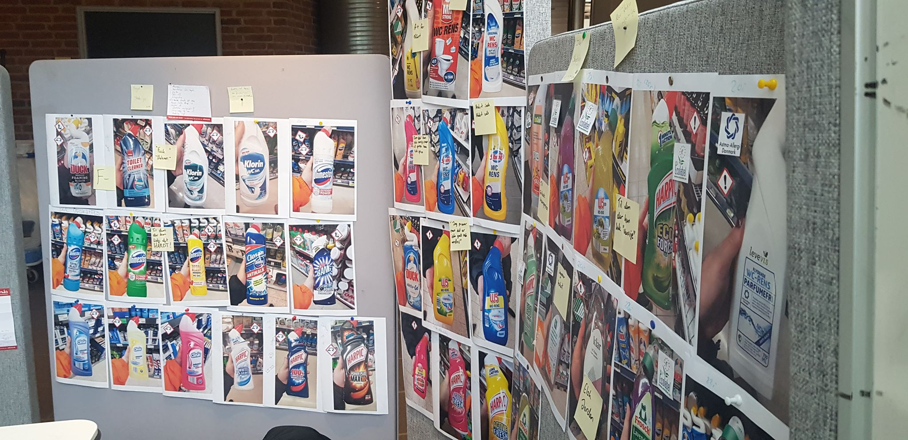
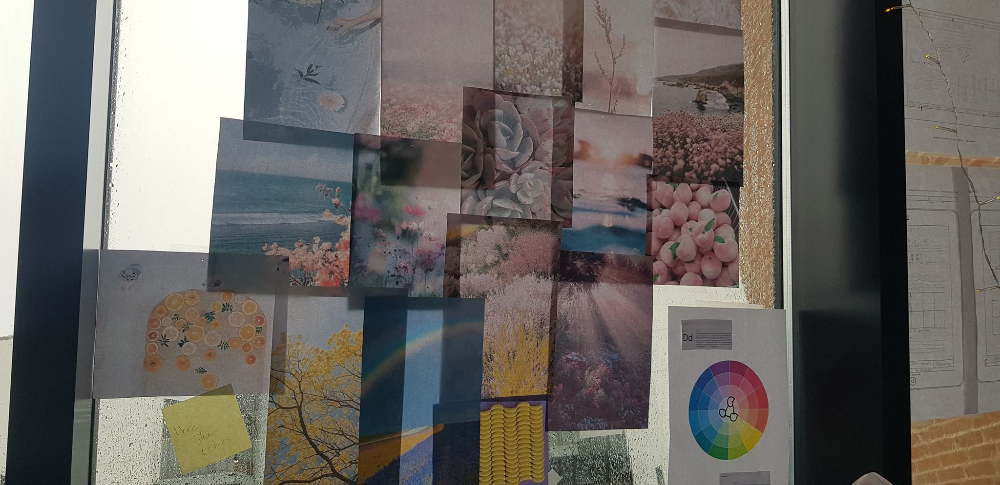
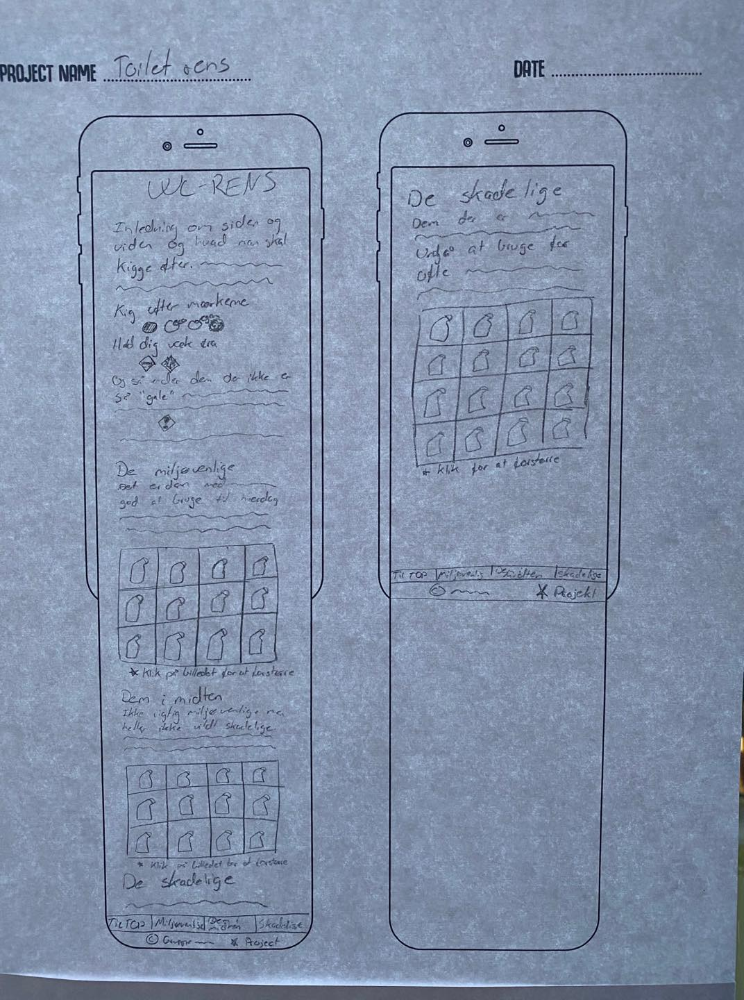

Onepage projektet
I dette projekt skulle vi benytte os af den brede teori, vi havde fået fra tidligere forløb samt fra Design Thinking projektet - og lave en Onepage. En Onepage er kort sagt en side, hvorpå man kan finde alt informationen uden at klikke ind på andre sider.
Ved projektets start trak vi et 'objekt', som skulle være vores "motiv" gennem hele processen. Vi var så heldige at trække WC-Rens.
I en gruppe på 3 greb vi processen an, som vi havde lært det fra Design Thinking - og gik i gennem de samme 6 faser som du kan læse mere om HER .
Første fase fik vi brainstormet og researchet i alle hjørner af wc-rens. Alt fra dens promoverede emballage, til vandværkernes erfaring med skadeligt syre (som noget wc-rens er).
I anden fase spurgte vi folk på campus, omkring deres tanker vedrørende wc-rens. Ud fra den undersøgelse fandt vi frem til, at folk primært tænker i effektivitet, duft og pris, hvad rengøringsartikler angår - herunder wc-rens. Det undrede os, at der ikke var nogen som undrede sig over, hvor miljøvenligt produktet var. Så vi tog nysgerrigt ud i byens mange butikker, for at se hvor mange forskellige typer af wc-rens vi kunne finde. Vi fyldte vores vægge med forskellige typer af wc-rens og satte dem i kategori - derefter brainstormede vi igen.
Vi undrede os hvorvidt miljøvenligt wc-rens, var ligeså funktionelt, som den skadelige kategori - så vi testede det! Vi fik fine resultater på vores forsøg - og vi kunne hermed konkludere, at den skadelige kategori i nogle tilfælde kan ætse metaller.
Vi kom også frem til, at den miljøvenlige duftede bedre. Prisen på de to kategorier var dog den samme i gennemsnit. Ud fra den data vi havde indsamlet, begyndte vi at tænke på en problemstilling. Hvad var det reelt set, vi ville med denne data? Vi blev enige om, at vi ville oplyse folk - og gøre dem klar over, hvor unødigt skadelig visse wc-rens produkter er.
I tredje fase gik vi i gang med at tænke i design - herunder wireframes.

Til sidst var der ikke andet for, end at gå igang med at kode vores Onepage - og selvfølgelig få den brugertestet.
Onepage projektet var meget lærerigt for mig, og vi var som gruppe meget glade for processen, samt det endelige produkt.
Hvis du ønsker at se den færdige Onepage, kan du besøge den HER